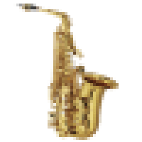
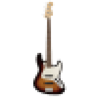

 
Choose a melody:
Melody 1
Melody 2
Melody 3
Choose another melody:
Melody 1
Melody 2
Melody 3
Choose a bassline:
Bassline 1
Bassline 2
Bassline 3
Pick your melodic elements! Click
here
when you're done!